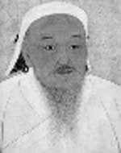

Moğol İmparatorluğu’nun kurucusu olan Cengiz Han’ın (1162-1227) atlı savaşçıları, Asya şehirlerine yaptıkları kanlı akınlarla ünlenmişlerdi. Hayatının sonlarına doğru Cengiz Han; Çin, Orta Asya ve Doğu Avrupa’da çok geniş bir toprak parçasının hakimi durumuna gelmişti. Cengiz Han’ın ölümünden sonra oğulları ve torunları impatorluğuk topraklarını insanlık tarihi boyunca görülmüş olan en geniş sınırlara ulaştırdılar.
Cengiz Han’ın işgallerinin getirdiği kan ve yıkım efsaneleşmiştir. Onun bilindik taktiği bir şehri kuşatmak ve eğer şehirde yaşayanlar karşı koyarsa hepsini öldürmekti. Moğolistan’da ulusal kahraman olarak kabul edilmesine rağmen, dünyanın kalan bölümlerinde Cengiz Han adı savaşta uyguladığı insanlık dışı taktiklerle özdeşleşmiştir.

Asıl adı Timuçin olan Cengiz Han, göçebe bir Moğol şefinin oğluydu. Cengiz Han dokuz yaşındayken babası kabile içindeki muhalif bir grup tarafından zehirlendi. Cengiz ve annesi yoksulluğa düştüler. Cengiz sonraları ailesinin klan yönetimi üzerinde hak sahibi olduğunu iddia etti ve babasının hasımlarını yok etmek için savaşmaya başladı. Karizmatik bir lider olarak Moğol düzlüklerindeki komşu topluluklarla mücadele etti. Ulusu kendi egemenliği altında birleştirdi ve 1206 yılında Han adını aldı.
Sonraki yirmi yıl boyunca, o döneme kadar hiç kimsenin tanık olmadığı bir fetih dalgası başlattı. Moğol atlarının sırtındaki ordusu Kuzey Çin’i fethetti. 1215 yılında Pekin’i aldılar. 1220’lerde Kafkasya ve Pers coğrafyasına hakim oldu. Moğollar şehir savaşında deneyimsiz göçebeler olmalarına rağmen mancınıkları, savaş makinalarını ve diğer Orta Çağ taktiklerini mükemmel bir biçimde kullanmayı çok hızlı bir biçimde öğrenmişlerdi.
1227 yılında Tangutlar’ı yenip liderlerini tasfiye ettikten sonra Cengiz Han bir kaza sonucu attan düşüp öldü. Bugüne kadar yeri keşfedilemeyen gizli bir bölgeye defnedildi. Sonraki kırk yıl boyunca imparatorluk genişlemeye devam etti. 1250’lerde Cengiz’in oğulları hüküm sürdüğü sırada imparatorluğun gücü doruğa ulaştı.
Ek Bilgiler
1- Cengiz Han İmparatorluğu’nun Kuzey Moğolistan’daki başkenti olan Karakorum 1889 yılında Rus arkeologlar tarafından bulundu.
2- Efsaneye göre Cengiz, kimsenin bilmediği gizli bir yere gömülmek istemişti. Onun isteği doğrultusunda cenazesi taşınırken yolda karşılaşılan herkes öldürüldü. Cenaze töreninden sonra bütün hizmetçi ve askerleri mezar yerini açıklama ihtimallerine karşı katledildiler. Mezar yerinin nerede olduğu asla öğrenilemedi.
3- Moğolistan’ın komünist hükümeti, Cengiz’in resimlerini sergilemeyi ve hatta onun adını bile anmayı yasalamıştı. Komünist rejim 1990’da devrildi.